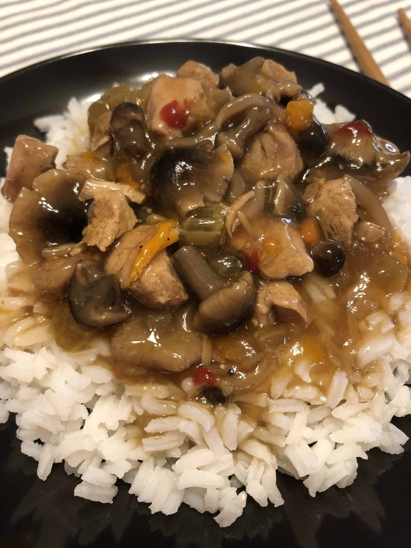

Chop Suey

Slow Cooker Chop Suey
A tasty meal that only takes a short while to prepare, and then can be left to cook for several hours before enjoying
Ingredients
- 1 Can of Chop Suey Vegetables
- 1 Can of Stir Fry Vegetables
- 1 Packet of Stir Fry Seasoning
- 1 lb Boneless Beef
- 1 lb Boneless Pork
- 2 Cans of Mushrooms
- 1 Can of Water Chestnuts
- 1 Can of Cream of Mushroom Soup
- 1 Can of Cream of Celery Soup
- 1/4 Cup of Soy Sauce
- Rice Cooked For Serving
Steps
- Mix soups, soy sauce, and stir fry seasoning. Set aside mixture
- Cook Vegetables in slow cooker for 2 hours on high
- Cut both cuts of meat into cubes (sized to your preference)
- Brown both meats and drain
- Add meat and sauce mixture and cook for an additional 15 minutes